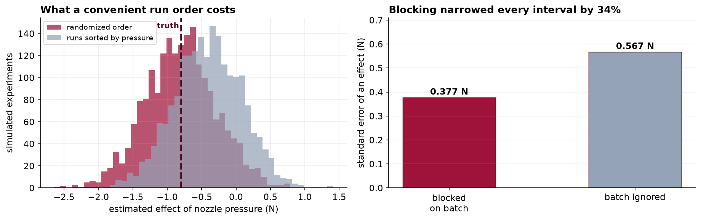

Capstone 7 analyzed a factorial experiment somebody else had designed. This one is about the design itself: how many runs you can afford, what a cheaper design stops being able to tell you, and how to find that out before the runs rather than after.
- Setting
- A contract coating line. Five process settings can be changed: oven temperature, line speed, primer viscosity, cure time and nozzle pressure. The response is peel strength in newtons, higher is better.
- The question
- Which settings raise coating peel strength, and what combination should the line actually run at?
- Why it matters
- Every run costs a line changeover, so the experiment has to be small. A design that is too small does not merely lose precision; it makes some effects impossible to tell apart, and the output gives no warning that this has happened.
- What we do
- Work out how many runs the full factorial would take, look at the eight-run design the team already ran and the recommendation it produced, show the alias that made that recommendation wrong, run a sixteen-run design that separates the effects, and price what blocking and randomization each contributed.
The eight-run design put line speed at +6.22 N, the second-largest effect in the study. The sixteen-run design puts it at +0.17 N, p = 0.65. The 6.22 belonged to temperature crossed with cure time, which the eight-run design had no column for. Slowing the line changed nothing; raising both temperature and cure time together gained 9.46 N.
Five Factors, and the Arithmetic of Runs
Five factors at two levels each is 25 = 32 distinct settings. Replicated twice, so that noise can be estimated without assuming the model is right, that is 64 runs. Each run needs a line changeover, which is why this is a design problem before it is an analysis problem.
| Design | Settings | Runs, 2 replicates | What it can separate |
|---|---|---|---|
| Full 25 | 32 | 64 | Everything, up to the five-factor interaction |
| Half 25−1, resolution V | 16 | 32 | All 5 main effects and all 10 two-factor interactions |
| Quarter 25−2, resolution III | 8 | 16 | Five effects, each of which is a sum of a main effect and interactions |
The budget allowed 32 runs. The interesting question is what the quarter fraction, at half that cost, stops being able to tell you, and the honest answer is that it stops being able to tell you what it is telling you.
The Eight-Run Design That Was Run First
Last quarter the team ran a quarter fraction. With three factors you get eight settings for free; the other two have to be built out of the first three, and the team chose D = AB and E = AC. Eight settings, two replicates, sixteen runs. Five factors, five effects, all estimated. It looks complete.
| Factor | Effect (N) | What the design actually estimates |
|---|---|---|
| Oven temperature | +10.31 | A + BD + CE |
| Line speed | +6.22 | B + AD |
| Primer viscosity | +1.57 | C + AE |
| Cure time | +1.28 | D + AB |
| Nozzle pressure | −0.98 | E + AC |
The standard error of an effect here is about 0.86 N, so line speed at +6.22 is more than seven standard errors from zero. By any conventional reading that is a solid, actionable finding, and the recommendation wrote itself: slow the line down.
Resolution, and Seeing an Alias for Yourself
The right-hand column of that table is not a theoretical caution. It is a statement about arithmetic that you can check in a few lines: build the column of signs for the interaction A×D, and compare it element by element with the column for B.
The same check across all five factors gives the whole picture: A is indistinguishable from B×D and C×E, B from A×D, C from A×E, D from A×B, and E from A×C. That is what resolution III means, and it is a property of the design, decided before any panel was coated. No analysis recovers information the design never collected.
Acting On It, and the Confirmation That Followed
The line was slowed from 12 to 8 meters per minute. Forty panels were measured, twenty before and twenty after. The design had promised about six newtons.
A confirmation run is the cheapest insurance in experimental work, and this is what it buys. The interval runs from about one newton down to two thirds of a newton up, and excludes the promised +6 many times over. Something was wrong with the design, not with the process, and forty panels were enough to find out.
The Sixteen-Run Design
The half fraction uses a single generator, E = ABCD, giving the defining relation I = ABCDE. Main effects are now aliased only with four-factor interactions, and two-factor interactions only with three-factor ones. Under the usual assumption that high-order interactions in a physical process are negligible, all five main effects and all ten two-factor interactions are separately estimable. That is resolution V, and the notebook confirms it the same way as before: among those fifteen columns, no two are identical.
| Step | Runs | What happened |
|---|---|---|
| As delivered | 33 | The logger wrote one row twice |
| After deduplication | 32 | Two full replicates of 16 settings |
| After a failed gauge | 31 | One panel has no reading, so 15 of 16 settings have both replicates |
The lost run leaves the design very slightly unbalanced. Least squares handles that without comment; the hand-computed contrast of the previous section would not, which is a good practical reason to fit a model rather than average columns once a design stops being perfectly balanced.
Line Speed Was Never There
| Term | Effect (N) | SE | p |
|---|---|---|---|
| Oven temperature | +8.47 | 0.38 | <0.001 |
| Temperature × cure time | +6.47 | 0.38 | <0.001 |
| Viscosity × pressure | +2.45 | 0.38 | <0.001 |
| Primer viscosity | +2.01 | 0.38 | <0.001 |
| Cure time | +2.01 | 0.38 | <0.001 |
| Nozzle pressure | −1.04 | 0.38 | 0.015 |
| Line speed | +0.17 | 0.38 | 0.65 |
Line speed is +0.17 newtons on a standard error of 0.38. It was never there. The +6.22 the eight-run design reported belonged to oven temperature crossed with cure time, which appears here at +6.47 and could not have appeared at all in a design where its column and line speed's column were the same numbers.
![Left: grouped bars of the effect on peel strength for five factors plus the temperature-by-cure-time interaction, comparing the 8-run resolution III design against the 16-run resolution V design. Line speed falls from 6.22 to 0.17 between the two, annotated with an arrow, while the temperature-by-cure interaction appears only in the 16-run design at 6.47 and is labeled the effect it was standing in for. The 8-run design has no bar there, labeled not estimable in 8 runs. Right: an interaction plot with mean peel strength against oven temperature, one line for 45 second cure rising gently from 60.9 to 63.2 and one for 75 second cure rising steeply from 56.7 to 71.7.](../assets/img/capstone-factorial-designs.png)
The aliased estimate was not noise. It was a real effect of about the right magnitude, attached to the wrong label. That is what makes resolution III dangerous rather than merely imprecise: a low-resolution design does not produce vague results that invite caution, it produces sharp results that invite action. The standard error was 0.86 N and it was correct. It was measuring the precision of a quantity nobody wanted.
Blocking: the Batch You Should Not Randomize
Thirty-two runs need two batches of primer, and batches differ. The plan put replicate 1 entirely on batch 1 and replicate 2 on batch 2, so batch is the block. It enters the model as a term, which takes the batch difference out of the error rather than leaving it there to inflate every standard error.
Note what blocking did not do. The batch difference is still there in the process; it has not been removed from the world, only from the yardstick. And note the choice it represents. Batch was known in advance, so it became a block. Had the batches instead been randomized across runs, the same variation would have gone into the error term and every interval would have been a third wider for no benefit. The rule is short: block what you can predict, randomize what you cannot.
Randomization: the Drift Nobody Measured
The oven creeps upward across a shift. Nobody measured that and nobody had to, because run order within each batch was randomized. The value of randomizing is easiest to see by simulating the alternative: running the settings in a convenient order, all the low-pressure runs first, which on a real line saves genuine time.
Four tenths of a newton is a five percent distortion of the temperature effect, which nobody would ever notice. On nozzle pressure it is half the effect, and it changes the conclusion about whether pressure matters at all. You cannot know in advance which of your effects are small, which is the entire argument for randomizing: it converts a bias you cannot see into noise you can measure.

The Recommendation, and Confirming It
The recommendation is not a factor. It is a combination, and the interaction is the reason.
| Mean peel strength (N) | Cure 45 s | Cure 75 s |
|---|---|---|
| Temperature 170 °C | 60.89 | 56.73 |
| Temperature 190 °C | 63.19 | 71.67 |
Read the bottom row against the top. Raising the temperature at short cure gains 2.3 N. Raising it at long cure gains 14.9 N. And at the low temperature, extending the cure actually makes the coating worse, from 60.89 down to 56.73. A recommendation that named either factor alone would be wrong in a way that a recommendation naming both is not.
The design that cost twice as much found the lever the cheap design pointed away from, and the confirmation run is what turns an estimate into a change somebody is willing to sign.
What to Watch
- ✓Report the resolution next to the results, every time. A reader cannot infer it from an effect table, and a resolution III design produces sharp numbers that invite action rather than vague ones that invite caution.
- ✓Aliasing is a property of the design, not of the data. The only honest options are to run the extra points that break the alias, or to print the alias chain beside the estimate and let the reader see the ambiguity.
- ✓Say which interactions you assumed away. Resolution V is safe on the assumption that three-factor and higher interactions are negligible. That is usually reasonable in a physical process, and it is an assumption, so it belongs in the write-up.
- ✓Fifteen effects is fifteen tests. Six terms here clear p = 0.05, and on a pure-noise design you would expect about one to. Rank by magnitude against the standard error rather than reading down a column of p-values, which is the lesson of Capstone 4 arriving in new clothes.
- ✓Randomize even when it is inconvenient. Sorting runs by a factor saves real time on a production line and buys it by confounding that factor with everything that drifts. The cost never appears in the output.
- ✓Confirm before you commit. Both recommendations here were tested on fresh panels first. The first confirmation is the only reason anyone discovered the screening design had misled them, and it cost forty panels.
- ✓A designed experiment on a production line has consequences. Running deliberately poor settings makes genuinely worse product, and somebody has to decide what happens to it. That belongs in the plan, not in the write-up.
Design of Experiments in Data Science & AI
Factorial thinking is older than computing and it keeps being rediscovered wherever runs are expensive.
| Where it appears | The same idea, in a different costume |
|---|---|
| Hyperparameter search | Grid search is a full factorial; random and Latin-hypercube search are fractional designs chosen because the grid does not fit in the budget |
| Ablation studies | Removing components one at a time is a one-factor-at-a-time design, which cannot see interactions between components at all |
| Multivariate web testing | Several page elements varied at once, usually in a fractional design, usually without the alias structure being reported |
| Prompt and pipeline tuning | Instruction, examples, temperature and retrieval depth crossed together, where the interactions are the interesting part |
| Simulation and A/B infrastructure | Blocking on day, region or cohort, for exactly the reason batch was blocked here |
Fractional designs come from Finney in 1945 and were developed for industry by Box, Hunter and Hunter, whose book remains the standard reference. Two directions are worth knowing. Response surface methodology adds center points and axial runs to fit curvature, which a two-level design cannot see at all: every factor here was tested at exactly two settings, so the analysis assumes the response between them is a straight line. Optimal design, the D-optimal and I-optimal families, drops the requirement for a regular fraction entirely and instead searches for the run set that minimizes a stated criterion, which is what most modern software does when the factors will not cooperate with a textbook layout.
The full project, step by step
The companion notebook works out the run arithmetic, builds the eight-run design and finds its aliases by comparing columns rather than by quoting a rule, reproduces the screening result and the confirmation run that contradicted it, verifies that the sixteen-run design has no duplicated columns, fits all fifteen effects with batch as a block, prices the block and the randomization in newtons, and closes with the interaction table and the final confirmation.
The dataset
(capstone-designing-a-factorial-experiment.xlsx) holds both designed experiments with their coded
and decoded factor columns, the two confirmation studies, the design plan written before any panel was coated,
and the model that generated the data so every estimate can be checked. Two written reports accompany it: a
plain-language brief for the plant manager, and a technical report covering
the alias structure, the blocked model and the confirmation.
🎓 Key Takeaways
- ✓An alias is two effects sharing one column of signs. Because D was built as AB, the A×D column is the B column, and the design returns one number for both.
- ✓Low resolution produces sharp wrong answers, not vague ones. Line speed came out at +6.22 N with a correct standard error of 0.86, and it is truly +0.17.
- ✓Block what you can predict, randomize what you cannot. Blocking on batch cut every standard error by 34 percent; randomizing run order kept a 0.4 N oven drift out of the effects.
- ✓The recommendation was a combination. Raising temperature gains 2.3 N at short cure and 14.9 N at long cure, so neither factor alone is the answer.
- ✓Confirm on fresh material. Forty panels showed the first recommendation did nothing, and forty more confirmed the second was worth +9.46 N.